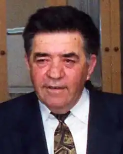

Народився 27 жовтня 1941 року в селищі Черкес-Кермані Куйбишевського (нині Бахчисарайського) району Кримської АРСР. У 1960 році закінчив Самаркандський кооперативний технікум, в 1977 році — журналістський факультет Ташкентського державного університету, в 1980 році — аспірантуру того ж університету, потім планово-економічний факультет Інституту народного господарства, Вищу партійну школу при ЦК КПРС.
18 травня 1944 року разом з матір'ю висланий в Сирдар'їнський район Узбецької РСР.
У 1960-1964 рр. — економіст в системі торгівлі. У 1964-1965 рр. — завідувач споживкооперації радгоспу. У 1965-1974 рр. — кореспондент, завідувач відділом літератури і культури, перший заступник головного редактора газети "Сірдарінська правда". У 1974-1980 рр. — головний редактор газети "Джизакская правда". У 1980-1982 рр. — заступник головного редактор журналу "Йилдиз". У 1982-1987 рр. — заступник головного редактора газети "Ленін байраг'и". У 1987 р. — редактор у Видавництві художньої літератури ім. Г. Гуляма. У березні 1988 року переїхав до Криму. В 1988-1989 р. — завідувач райспоживкооперації в селі Медведівка Джанкойського району Кримської області. У 1989-1992 рр. — відповідальний за випуск додатку до газети "Кримська правда" кримськотатарської газети "Достлук'". У 1992-1997 рр. — директор малого підприємства "Достукл'". У 1997-1998 рр. — депутат Верховної Ради Криму на постійній професійній основі. У 2000-2001 рр. — власний кореспондент газети "Урядовий кур'єр". Заслужений журналіст України (1997 р.). Письменник. Член Спілки кримськотатарських письменників. Член Спілки письменників України (1993 р.). Депутат Верховної Ради Криму 2-го скликання (1994-1998гг.). Помер 19 жовтня 2011 року в Сімферополі.